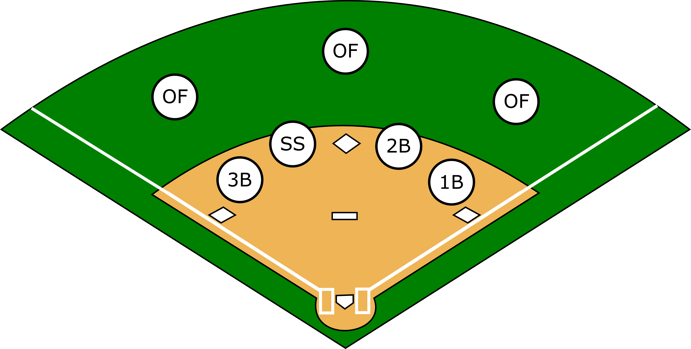

Click on any position to select it

Current Position:
First Base
Rank by
Batting Avg
Home Runs
Runs
Doubles
Triples
Runs Batted In
Stolen Bases
Hit By Pitch
Year
2017
2016
2015
2014
2013
2012
2011
2010
2009
2008
2007
Display # Bars
5
10
15
20
25
30
35
40
45
50